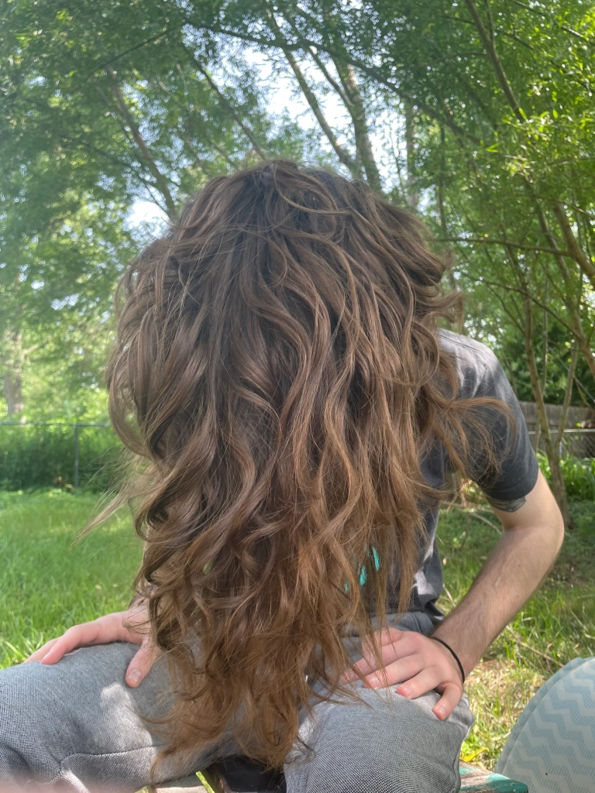

Sunday, July 24th
Sunday, July 17th
Hello again,
What a crazy week we had this week. I had my fourth (half way through!) session of chemo, and Anna had an eye surgery (don’t worry nothing scary). We had to make some changes to my treatment due to some complications that are fairly common with one of the medications, and I have decided to take FMLA leave to focus on recovering and reducing my overall stress.
So first things first, the good news! We are officially half way through treatment, if all goes according to plan. I have my midway PET scan this coming Wednesday which will give us a very accurate picture on what the remainder of my treatment will look like, as well as point out any residual cancer. I mentioned that we had to make some changes to my treatment plan. In the beginning of all of this I mentioned that the standard of care for Hodgkins’ is the ABVD (adriamycin, bleomycin, vinblastine, and dacarbazine) chemo regiment. One of the main concern with this treatment is that bleomycin can cause lung damage and scarring. Well, the results of my last pulmonary function test came back showing a 9% decreased oxygen diffusion capability. After my oncologist conferred with some of her colleagues, they decided to remove bleomycin due to my age and the overall lower effectiveness when compared to the other three. Typically they don’t remove bleo until lung function drops by 25%, although that seems to be changing (from my own non-scientific research) where people will complete the first have with ABVD and the last half with just AVD due to bleo’s toxicity.
Sorry for all of that medical jargon, onto more medical jargon but this time not cancer related! So, Anna has an eye condition called keratoconus, where slowly over time her cornea’s droop into tear drop shapes and make her vision worse over the course of years. On Thursday she had her second “cross-link” procedure which will freeze her corneas in place and slow/stop the progression of the disease for the next decade. Not too bad, except for the fact that I had chemo the day before, and my mom came down with covid right before we were going to stay with her since both Anna and I were going to be out of commission. Now I really can’t drive the few days after chemo just due to “chemo-brain” and nausea, and her procedure was up in Omaha. Thankfully, Uncle Mike and Grandma & Grandpa came to the rescue! He drove down to Lincoln to take us up there, stayed with during the procedure, dropped us off at Grandma’s who proceeded to feed and take care of us for the whole day, and then he drove us right back to Lincoln after dinner. Truly a life saver! I don’t know what we would have done without everyone! Oh, and as a cherry on top Anna’s mom came up (from 6 hours away mind you) and is staying with us from Saturday through till tomorrow. She brought more food, AND cleaned our entire house! We are really truly blessed with the people we have in our lives, and I couldn’t be more thankful for all of the help that everyone is so eager to give at the drop of a hat.
Oh man, what else happened this week to update you all on. Oh yes, FMLA. I have decided to take off the remainder of my treatment from work to really just focus on getting better and being able to work on a few things that have been sitting dormant from just not having any energy. Namely, I have been working on my Data Analysis certifications for a while, and well that takes a lot of work and mental energy, which I have been severely lacking recently. So with this break from work I can focus on getting that finished up so that when I do return to work, I can maybe find a job that I enjoy and that pays me what I am worth. Now don’t worry, I do have short-term disability covered from work (thank goodness I opted in to that, real stroke of genius there) and I have applied for financial assistance through the Heartland Cancer Foundation, who if approved, will pay for my rent and utilities.
All in all a crazy, crazy week. But, we are set up for an easier recovery and are rounding out the home stretch now.
Until next time,
-Tanner
Sunday, July 10th
Hello again,
This week came with some exciting news, but also with the discovery of more persistent side effects from last week’s treatment. Good news or bad news first? I’ll leave you all with the good news at the end since the bad news isn’t really too bad.
I suppose the bad of this week: the fatigue is getting more pronounced and longer lasting. Towards the beginning of chemo I was back to 100% by the next Wednesday following my treatments. This time, however, it persisted until about Friday; although, it was less pronounced and I was still able to have mostly normal days, I would still get tired very quickly from any sort of physical exertion. The second side effect that has gotten worse since starting is acid reflux and just the general stomach aches after I eat. It’s not so much nausea as much as it is more similar to feeling really bloated.
In not bad nor good news, my hair is still holding on “strong” and by that I mean that I haven’t lost all of it, but it is pretty thin now and I shed about a golfball to grapefruit sized ball of hair every day. No real update on this part if it though, keeps falling out, but not all the way gone yet!
Now onto the good news! I had. a blood test this past week and I am finally back into the healthy range for my white blood cell counts! Amazing news as I was finally able to (safely) hang out with friends without worrying too much about anything bad happening. Granted, we all work from home and are confirmed covid free so not too much risk to start out with, but you can’t be too safe! I am certain that this is only temporary and my counts will inevitably go back down next week from me next treatment, but my hypothesis is that as my body acclimates to this whole shebang I will only be really immunodeficient for the week of treatment and will bounce back during the off week. I will keep you posted on my non-doctoral hypothesis lol.
All in all, a pretty “normal” week, which is pretty great all things considered!
Until next time,
-Tanner
Sunday, July 3rd
Hello again,
This week was the week of my third treatment, and start of the second round of chemo (almost half way there!) All in all this one was not too bad, treatment went well, my white blood cell counts are getting better (though I am still severely neutropenic), I gained four whole pounds since the last treatment, and the side-effects were pretty easily managed.
Thankfully each week the mouth sores have been becoming less and less of a problem, which is a blessing since the first round they were nearly unbearable. This week the main side effects were nausea and fatigue. I could barely work on Friday I was so tired and acidy in my stomach. Almost anything I put in felt like it wanted to come back up, but thankfully nothing actually did. The fatigue this week was a bit different than it has been in the past. This time it was super intense for two days, Friday and Saturday, to the point where I basically had to lay in bed all day on Saturday, and was so tired I was loopy and dissociative. Then come this morning, I slept great all night, woke up early to use the bathroom and went right back to sleep till 9:30, and still have not needed a nap yet (it’s nearly 4:30)! The brain fog is completely gone today also, which is new, it usually takes a couple more days for it to totally go away.
Other than being super tired the last few days, I have decided that it was time to say goodbye to my beard. It had gotten so patchy the last few weeks with my hair falling out, and the only place that it decided to hold on strong was my neck. Not a great look if I do say so myself, so we are back to baby faced for the first time in over three years if I’m not mistaken. Speaking of hair loss, my head hair is starting to get seriously thin as well, and is the most noticeable on the sides. I am likely not going to shave it until I really really have to, partly out of stubbornness and partly because that sounds like too much of a hassle. At this rate I’ll be bald by it just falling out by the end of August anyway, I’ve already lost over half of it in the last three weeks, so another 6 and I’ll be needing some beanies!
All in all, it’s been a really good treatment week, thanks in no small way to Anna who makes each week so much easier. She really is such a blessing and an incredible partner through all of this. And to the rest of those reading this who support in all the ways that you do, thank you for everything, it all helps more than you know.
Until next time,
-Tanner
Sunday, June 26th
Hello again,
This week was my off week and conclusion of my first round of chemo! Only three more left to go, totaling 6 more treatments. All in all this week was not too bad, some latent fatigue stuck around until Thursday, which is a day longer than it stuck around last go-round, so we are expecting the fatigue to progressively last longer and longer as treatments continue. That being said, I’ve taken steps to help with it, namely taking a short nap at lunchtime and if needed after work as well.
My hair is now noticeably thinner than it once was, so now I have a normal person’s amount of hair. Though, it is likely to start getting patchy come the fallout from my next treatment on Wednesday. I have not yet decided if I am going to shave my head or just let it do its thing until only a few stragglers are left. I will certainly keep you all posted and include some pictures of the melon when that time comes though.
Last week I touched on my neutropenia and overall white blood cell count (or lack there of). It has improved a little bit, though I am still operating with approximately half of an immune system. As such, Anna and I have had to be extra careful with friends and going out in public. Honestly, we are likely being overly cautious and I am feeling pretty great all things considered, Anna and I even went on a mile walk yesterday since it was so beautiful out!
One consequence of my fatigue and our quarantine is that Anna has had to bear the brunt of preparing food, and let me tell you what a blessing it has been. She has really started to enjoy cooking and getting creative in the kitchen and everything that she just creates on a whim has been fantastic. The things this woman can do with a simple air frier will astound you! From stuffed mushrooms to frying up some sweet potato skins, to making garlic tortilla chips. We have been eating GOOOOOD.
Other than that, not much to report this week as its been pretty easy and uneventful, which considering the circumstances is pretty wonderful.
Until next time,
-Tanner
Sunday, June 19th
Hello again,
This was my second treatment week, thus completing my first of four cycles. We are already 25% of the way through this whole ordeal! So far this treatment’s side effects have not been too terrible. Mostly just fatigue, Friday was exhausting but I was able to sleep all day yesterday (5 hour naps are amazing), and today I am back to about 85% of my normal energy levels. My nausea this week is so much more manageable, only needing to take three Zofrans so far this week, and my appetite has been extra high. Last treatment, the mucositis (mouth sores) were near unbearable, thankfully I got prescribed magic mouthwash this time and it is so incredible. It has taken my pain from an 8 on the worst days down to a 3, which makes sleeping, eating, everything really so much easier.
A couple of important notes from my last blood test: I have neutropenia, so Anna and I have to isolate until my white blood cell count and specifically neutrophils come up to a better level. Some numbers for the folks who are interested: total WBC on 6/15 was 2.06K/uL (normal range is 4-10) and neutrophils were 0.13K/uL (normal range is 1.8-8.5). Thankfully, it has gotten better, we tested on Friday and WBC was 1.86K/uL and neutrophils were 0.8K/uL. Not to worry though, this is expected, especially with the chemo that I am on, and it is not dangerous in its own right, it just means that we have to be extra careful. We have another blood test on Wednesday, which will be covered in next week’s update.
Oh and in quite sad news, my hair has started to fall out, it started in my beard and is now affecting my head hair. My beard has gotten so thin that I am going to shave it for sure, but as for my head hair, its definitely going, but there is so much of it that I likely won’t be shaving it quite yet. Also here is a picture for your viewing pleasure before it all goes:
All in all, this round of Chemo is not as bad as it was last time!
Until next time,
-Tanner
Sunday, June 12th
Hello again,
This week was my off week and was not that bad at all! I only had some lingering side effects until Tuesday, namely the mouth sores, but they were very manageable and far less intense than last week. The only new side effect that has come around has been very slight neuropathy in some of my fingertips, they aren’t tingly or numb on their own, but are quite a bit more sensitive. It’s an interesting sensation and one that we will want to keep an eye on, as this side effect could be present for quite some time post-treatment.
Thankfully by Wednesday I finally felt 100% like myself again, was able to get some good work done, and feel normal again. Plus I was finally able to get some good sleep, especially these last two nights, which has helped tremendously. I was even feeling good enough to have a little cook-out with some of my closest friends last night (who work from home and had negative covid tests for safety).
All in all a very good week and respite to recharge for my second treatment coming this Wednesday the 15th. For this next round of treatment, I am expecting the side effects to be very similar, though this is the week that we will find out if my hair decides to start falling out. My doctor is fairly certain that I will in fact lose my hair, but I am stubborn and so is my hair so hopefully it decides to stick around. Realistically though there is a 15-58% chance that it does fall out. Thankfully, by the next update I will already be ~25% of the way done with my treatment!
Until next time,
-Tanner
Sunday, June 5th
Hello all, and sorry that this is a few days late!
To catch anyone up to speed that may have not been updated recently: I have cancer, but don’t worry its not a super scary cancer, it is Stage 2 Hodgkins Lymphoma. Which means that this is super curable, and I will likely be done with the whole debacle in around about 4 months time. For these next four months, I will try to keep this thing updated every night (plus or minus a few days, as you can see we are getting off to a great start here… 4 days late).
So, treatment. I will be getting a grand total of 8 doses of the well known ABVD regiment of chemotherapy. I get each of these doses once every two weeks, on the 1st and 15th day of each cycle, with each cycle lasting approximately a month (28 days to be exact). If all goes to plan and there aren’t any unforeseen scheduling conflicts, this will put my last treatment of Chemo on September 7th. Then after a few months of PET scans I should officially be cancer free before Christmas, and with Hodgkins that means that it’s gone for good!
This past week:
I had the first treatment start this past Wednesday, June 1st. It was honestly not as bad as I expected, took quite a while for the first round, just to make sure that I didn’t have any bad reactions to the new meds. Thankfully, I tolerated everything just fine and was only a bit drowsy from the Benadryl they gave me, and was able to go to work after the infusion.
Day two came and was also not too bad, a bit of nausea here and there, but I have meds for that. I was able to work once again just fine. Then Friday, day three, rolled around and put me on my ass, I was so fatigued by just doing my normal Friday things. This was also the first day of the worst side effect that I have experienced thus far: oral mucositis, aka mouth sores. Don’t worry this isn’t gross puss filled sores or open wounds or anything like that (yet), no this is much more like having eaten spicy food and now your mouth is on fire. Always. From the inside of your lips to under your tongue, to the roof of your mouth. Everything is on fire all of the time. There are only a few things so far that have worked to lessen this, ironically, spicy food has been very effective at numbing the burn. So fight fire with fire? I have also been much more adamant about teeth health and rinsing with salt water and Biotene, which sucks at first, but is a life saver for about an hour or two at a time.
Friday wasn’t all too bad compared to Saturday, day 4. Saturday was the first day that I was truly incapacitated, I have never had my muscles ache from fatigue like that. It was quite dissociating to experience, my body didn’t feel quite like mine, except for the searing mouth pain to remind me where I was and what I was doing. Sleep was the only solace I could really find for Saturday, that and Anna’s amazing care to my every need. She is awesome, everyone should get themselves an Anna. Sleep was on and off all day and all night, but there was a period of time from about 7:00pm to 9:00pm when I was much more lucid and felt like myself again, but then the fatigue hit and I went to bed for a (sleepless) night.
That finally brings me to today, Day 5, where I am back to feeling about 90% back to normal. The mouth pain is the only thing that has lingered thus far, and that is much less intense than it has been the past few days. I was finally able to spend most of the day out of bed and grooving with Anna. We were able to get our house cleaned up and ready for next week, which for me is an off-week, but for her is the start of a 5-week summer class, so we will be busy for sure.
All in all through this I have been eating just fine, and other than Saturday have been feeling pretty alright about everything. I have an amazing person looking out for me and a wonderful support system all around (including all of you reading this right now). Oh, and my hair hasn’t started falling out yet, though Week 3 is usually when that starts so we can only hold out hope for a little while longer. That is all I have for today, and I promise they won’t all be this long and in depth, unless I wind up only doing these weekly. Haven’t really decided yet, so any input is greatly appreciated!
Until next time,
-Tanner